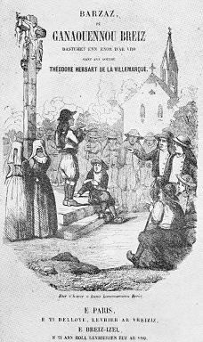

La Croix du Chemin
The Cross by the Wayside
Dialecte de Cornouaille
|
Francis Gourvil considère même qu'il s'agit d'une seule et même personne, mais Donatien Laurent montre qu'il n'en est rien. La Table A, quant à elle, indique que "La Croix du chemin" (ainsi que "La cheminée de ma maîtresse" ) a été chantée par Anaïc Olivier de Nizon, ( Marie Anne Olivier, épouse Delliou , 1768-1845, à qui l'on doit déjà 8 autres chants). Le chant déjà cité parle d'une "croix neuve" (strophe c) et de la ville de Pont-Croix près d'Audierne (strophe e). Dans l'"argument" de 1867, La Villemarqué attribue la composition du chant au fils du meunier du Marquis de Pontcallec (1698-1720) et suggère qu'il serait aussi l'auteur de la fameuse élégie sur la mort de ce personnage. |
 Couverture du 'Barzaz pe Ganaouennoù Breiz' brochure de 24 pages publiée vers 1844. |
As for Table A, it contains the hint that "The cross by the wayside" (along with "Sweetheart's chimney" ) was sung by Anaïc Olivier from Nizon, (i.e. Marie Anne Olivier, wife of Delliou , 1768-1845, to whom we are indebted for eight other songs). The afore-mentioned song is about a "New cross" (stanza c), as well as the town Pont-Croix (="Crossbridge") near Audierne (stanza e). In the"argument" to the song in the 1867 edition, La Villemarqué ascribes the authorship thereof to the son of Marquis de Pontcallec (1698-1720) 's miller and suggests that the latter might also have written the famous lament on the death of this nobleman. |
Mélodie - Tune
(Sol majeur: d'après l'harmonisation de Friedrich Silcher dans l'édition allemande de 1841).
| Français | Français | English |
|---|---|---|
|
1. L'oiseau qui chante dans la futaie,
A les ailes jaunes et dorées, La tête bleue, le poitrail roux: Là-haut sur l'arbre, il chante un chant si doux. 2. Mais de bien bonne heure il s'est posé Sur le rebord de notre foyer. Je récitais le "Notre Père"; "Petit oiseau, qu'es-tu donc venu faire?" 3. Autant de doux mots dans sa chanson Que d'églantines dans le buisson; - Choisissez une amie, Seigneur, Dont puisse se réjouir votre cœur.- 4. J'ai vu près de la Croix du chemin, Un minois propre à damner un saint. Dimanche à la messe, j'irai Et sur la place je la reverrai. 5. Ses yeux sont clairs comme le cristal De l'eau dans quelque précieux bocal. Ses dents blanches sont d'un brillant Si pur qu'on les prendrait pour des diamants. 6. Ses mains, ses joues sont comme l'ivoire, Du lait blanc dans une jatte noire; Si vous la voyiez, mon ami, Votre cœur en serait tout réjoui! 7. Quand autant de mille écus j'aurais Qu'en a le marquis de Pontcallec, Quand j'aurais une mine d'or, Sans elle, je serais bien pauvre encor. 8. Quand bien même il pousserait devant Mon seuil des fleurs d'or et de diamant, Quand j'en aurais plein mon courtil, Sans mon aimée, je serais fort marri! 9. Chaque chose obéit à sa loi: L'eau qui jaillit de la source va S'écouler dans le vallon creux; Tandis que vers le ciel monte le feu. 10. La colombe veut un nid bien clos, Le corps, quand il meurt, veut un tombeau, Et l'âme aspire au paradis. Et moi, c'est votre cœur que je chéris. 11. J'irai donc chaque lundi matin, Prier près de la Croix du chemin. J'irai jusqu'à la Croix nouvelle, En l'honneur de ma chère demoiselle. Trad. Christian Souchon (c) 2012 |
1. Chaque année, aux feuilles nouvelles
Un oiseau chante dans le bois; Son front est bleu, jaunes ses ailes, Rouge son cou, douce sa voix. 2. Comme je faisais ma prière, Ce matin, il s'est abattu Sur le toit de notre chaumière: - Cher petit oiseau, que veux-tu? - 3. Il m'a dit plus de douces choses Qu'il n'est de roses au courtil, Qu'il n'est de feuilles dans les roses: - Aimez, aimez! - me disait-il. 4. J'ai vu près de la croix de pierre, Au bord du chemin, lundi soir, Une fille passer; j'espère Dimanche, au pardon la revoir. 5. Ses yeux sont plus clair, j'imagine, Que l'onde en un cristal; des dents Plus blanches que la perle fine Qu'on pêche au retour du printemps; 6. Plus blanc ses mains et son visage Que la blanche goutte de lait; Si vous la voyiez, oui, je gage Que ma douce vous charmerait. 7. Quand je serais plus riche même Qu'un Pontcallec, plus riche encor; Si je n'ai pas celle que j'aime Je suis pauvre avec un trésor. 8. Quand je verrais croître à ma porte Au lieu de fougère, une fleur, Une b elle fleur d'or; qu'importe La fleur d'or, vraiment, sans son cœur! 9. Chaque chose à sa loi s'enchaîne; L'onde du rocher doit couler Et s'enfuir au fond le la plaine, La flamme s'élever dans l'air. 10. Il faut au cadavre la tombe, A l'âme, l'éternel bonheur, Un nid bien clos, à la colombe; A moi, ma douce, votre cœur! 11. Oui, je fais vœu d'aller pour elle, D'aller chaque lundi matin A genoux à la croix nouvelle Qui s'élève au bord du chemin. Traduction en vers de La Villemarqué |
1. A little bird sings in the high wood.
It looks as though it wore a blue hood, Wings of yellow, and breast of red, Sings on the tree. Did you hear what it said? 2. Early this morning it flew down town, On the sill of our hearth it came down, I was kneeling saying a prayer - Dear little bird. For a chat do you care?- 3. It tweeted to me many a word, As many as has roses the shrub! - Do choose a girl, pretty and smart. She will be able to rejoice your heart. - 4. I saw near the Cross by the wayside On Monday, a girl that, far and wide, Outshines all others. And next day When she comes out of mass, there will I stay. 5. Her bright eyes are as limpid and clear As the forest spring where drinks the deer. The pretty, white teeth of this girl Are brighter still than the most precious pearl. 6. Her sweet fine hand and her lovely cheek Are whiter than milk. She's mild and meek. Friend, if you could see her, I tell You that your heart would be under the spell. 7. As many thousand crowns, if I had, As are in Marquis Pontcallec's bag, Even if I had a gold mine I would be poor, if that girl were not mine. 8. Even when past the sill of my door Would thrive no green fern, but golden flowers And when my yard of it were full Without that girl, all that were void and null. 9. Each thing is subject to its own rule. The water runs down out of the pool. The water always runs downhill. The fire soars up to the sky: that's its skill. 10. The dove craves for a warm, cosy nest. For the dead corpse a dark grave is best. The soul longs for paradise bliss. Whereas my heart only longs for her kiss. 11. Every Monday morning, on the moss, I'll kneel in the shade of the New Cross, Near the Wayside Cross, on that day, That I may see my sweetheart I shall pray. Transl. Christian Souchon (c) 2012 |
Cliquer ici pour lire les textes bretons.
For Breton texts, click here.

|
Résumé
Dans le Barzhaz de 1867 ce chant est précédé de cet "argument": "La croix dont il va être question est celle du bord de la route de Quimperlé à Riec. Le jeune "kloareg" , auteur de la chanson qui en parle, était de cette dernière paroisse, et renonça à la robe noire pour reprendre, comme on dit, l'habit blanchi de farine; son père en effet était meunier du marquis de Pontcallec et avait son moulin sur un cours d'eau, non loin du manoir seigneurial : il rimait force zônes (sonioù) en piquant sa meule, et peut-être faut-il lui attribuer la belle élégie de son seigneur. Quoi qu'il en soit, la pièce suivante est digne du même poète, j'allais dire du chantre de Laure." Les chants du carnet de Keransquer Le rapprochement avec le premier cahier de Keransquer, montre que le jeune Barde a puisé essentiellement à deux sources: Les mots "mantel" (manteau - de la cheminée) et "propoz" (tenir des propos), qui sentent trop le français , sont remplacés par l'impropre "treuzoù" (seuil) et l'insipide "lared" (dire). La deuxième moitié de la deuxième strophe: -Evnig mad, petra a glasker?", Alors que j'étais à dire mon "pater" - Mon bon oiseau, que cherche-t-on? est du crû de La Villemarqué. Elle fait de cette histoire d'oiseau multicolore un chant de clerc , conformément au programme énoncé en préambule du Pauvre clerc , dans l'édition de 1839! D'une maîtresse belle comme les saints J'irai la voir dimanche. Oui, s'il m'est possible de marcher. La dernière ligne ("Ya, mar ve posubl din kerzhed") suggère que l'amoureux pourrait être un impotent qui a du mal à marcher et qui s'est épris d'une (jeune) beauté. L'expression "ur vestrezik evel [d']ar zent" (une maîtresse comme les saints) est-elle blasphématoire? Ce n'est pas l'avis de La Villemarqué qui l'a conservée telle quelle, y compris dans sa traduction "ur plac'h evel ar zent" (une jeune fille belle comme les saints). (b) Et je lui apporterai en présent Un anneau d'or, l'autre d'argent. Si vous la voyiez, mon ami Elle vous mettrait la joie au cœur! L'amoureux est riche. Voudrait-il séduire la belle par ses largesses? Suivent les strophes 5, 6 du Barzhaz qui font le portrait de la dame, et le couplet dont La Villemarqué a sans doute eu raison de faire sa 11ème strophe, où le héros de l'histoire annonce qu'il ira s'agenouiller chaque lundi matin au pied de la Croix neuve, pour l'amour de sa belle, - s'agit-il de l'impressionner par une piété ostentatoire? (c) Elle porte un ruban Auquel il y a quatre anneaux, Un ruban rouge allant jusqu'à terre Auquel il y a dix huit miroirs (?). (d) - Moi, j'ai une maîtresse à Pont-Croix Qui n'est ni trop petite, ni trop grande. Si vous la voyiez, mon ami Votre cœur déborderait de bonheur! Non seulement la fille est jolie, mais elle est riche, elle aussi. Elle possède déjà quatre anneaux (offerts par qui?) qu'elle a joints aux dix-huit miroirs (s'il s'agit bien de miroirs, "mirouer', car Donatien Laurent a lu "rimiar", un mot incompréhensible) accrochés au ruban de sa coiffe indiqueraient, comme on l'a vu dans le chant précédent , que sa dot se monte à dix-huit mille écus. La suite (d) est peu claire: il est question d'une maîtresse - sans doute la même - demeurant à Pont-Croix , près d'Audierne. Il semble qu'il y ait ici une lacune dans le récit et que la belle dise quelque chose à quoi le narrateur répond: "Me ken aliez a vil skoed En-defe Markiz Pontkalek": (7.1) - Moi, autant de milliers d'écus Qu'en aurait le Marquis de Pontcallec. (e) Je n'ai pas besoin de vous: On me dit que vous êtes la fille d'un prêtre . - Qui trouveriez-vous pour prouver Que je suis la fille d'un prêtre? Je suis la fille d'un homme comme il faut, Natif du Léon. Cette histoire grinçante rappelle plus la fameuse chanson "An hini gozh" , que l'idylle en laquelle La Villemarqué a cru bon de la métamorphoser. Ce qui est sûr, c'est que l'argent et la richesse sont au centre de l'intrigue et que nulle part, il n'est question d'un clerc qui jette sa soutane aux orties pour les beaux yeux d'une belle. En outre, les noms de lieux cités dans l'argument qui évoque la route de Quimperlé à Riec-sur-Belon n'apparaissent pas, non plus, dans ces sources. Quant au nom de Pontcallec , il nous entraine à une vingtaine de kilomètres plus à l'ouest. Dans la présentation commune des soi-disant "quatre chants de clercs" dans l'édition de 1839, cette référence sert à dater la "Croix du chemin": "La troisième chansonnette est antérieure à la fin du siècle dernier, car elle fait mention des seigneurs de Pontcallec, famille qui, depuis cette époque a quitté la Basse-Cornouaille". La strophe (8) du Barzhaz reprend en la modifiant la phrase (e) "N'am-eus ket afer ac'hanoc'h" (je n'ai pas besoin de vous), pour lui donner un sens qui cadre avec cette histoire de clerc converti à l'amour. Où l'on retrouve Merlin-Barde Mais d'où viennent donc les strophes (9) et (10)? Il semble bien que ce soient des digressions à partir de la phrase "Kement tra 'deus e lezenn graet"(chaque chose a sa loi fixée), par laquelle débute ce passage. Cette phrase se retrouve, à l'identique, dans un autre chant du manuscrit de Keransquer, page 305.2. Il s'agit du chant "Merlin" dont est tiré l'essentiel de Merlin-Barde , et plus particulièrement de la strophe (89). Si elle a été laissée de côté dans le "Merlin-Barde" du Barzhaz, elle a visiblement inspiré les strophes 9 et 10 de la présente pièce (89) "Bonne santé à vous, Seigneur Roi, Me voici à nouveau de retour. J'aurai votre fille, cette foi: Après la malchance vient toujours la chance, Tout comme le printemps suit l'hiver, Et les feuilles vertes, les feuilles sèches, Et la rose rouge, l'épine noire écrasée Chaque chose a sa loi fixée..." Ici encore, La Villemarqué, détourne le sens du texte qu'il adapte. Dans "Merlin", le jeune Raphaël, veut signifier au roi que le serment qu'il a prononcé a déclenché un processus inéluctable , aussi inéluctable que le retour de la belle saison, et que ses tentatives pour échapper à ses obligations sont fatalement vouées à l'échec. La transposition de La Villemarqué énumère plutôt les choses soumises au principe des affinités électives . En l'absence d'autres sources connues, il y a tout lieu de croire que c'est sa propre poésie dont, de manière assez imp(r)udente, il fait des éloges dithyrambiques dans les "notes et éclaircissements" de 1845: "Quoi de plus frais, de plus délicat, de plus chaste et de plus suave que ces chants d'amour? L'expression en est mélancolique et douce. Elle emprunte au ciel à la nature, aux fleurs des bois la variété de ses vives couleurs...Cet autre [clerc] qui lorsque la colombe demande un nid bien clos, le cadavre la tombe et l'âme le Paradis, demande lui le cœur de sa bien aimée, n'est-il pas arrière-neveu de Pétrarque ou de Dante?" (Dans l'argument de 1867, il se contente d'un plus sobre: "La pièce suivante est digne...du chantre de Laure"). On comprend pourquoi le Barde de Nizon était si réticent à autoriser une édition critique du Barzhaz. Remonter "aux sources du Barzhaz", comme nous y invite Donatien Laurent, met à jour des à-peu-près et des supercheries même là où on s'y attendrait le moins: dans les "chants de fêtes et chants d'amour" que les censeurs les plus acerbes avaient en général épargnés dans leurs critiques! |
Résumé
In the 1867 "Barzhaz, this song is preceded by this "argument": "The next song is about a cross standing on the road from Quimperlé to Riec. A young "kloareg" , the author of the song, dwelling in the latter town, resigned the black cassock to don the flour white miller's dress, as his father was miller to the Marquis of Pont-Callec and had a mill not far from the Lord's manor. He used to rhyme all sorts of sonioù (songs) when he was busy preparing millstones and he could possibly be the author of the beautiful lament on his lord's death. Anyway, the present song could have been written by the same poet, if not by Laura's exalter." The songs in the Keransquer copybook Comparing this piece with the first Keransquer copybook shows that the young Bard drew on two main sources: Besides, the words "mantel" (-piece) and "propoz" (speech) were discarded as French loanwords and replaced by the inadeqquate "treuzoù" (threshold) and the commonplace "lared" (to say). The second half of the first stanza: (2) "Keit ha ma oan gant ma "fater" -Evnig mad, petra a glasker?", As I was praying Pater Noster - Dear little bird, what brings you here? is of La Villemarqué's own devising. It makes of this tale of a many-coloured bird a clerk song , pursuant to the program set forth in the introduction to The poor clerk , in the 1839 edition! With a mistress who's like the saints I'll go and see her next Sunday I will, if I'm able to walk. The last line ("Ya, mar ve posubl din kerzhed") suggests that the man in love with a young beauty could be impotent and walk with difficulty. Is the phrase "ur vestrez evel[d']ar zent" (a mistress like the saints) a blasphemous one? La Villemarqué evidently doesn't think so, since he kept it unchanged, also in translation "ur plac'h evel ar zent" (a girl as beautiful as the saints). (b) And I shall bring her as a present A gold ring and a silver ring. If you would see her my friend Your heart would rejoice at the sight! The lover is a rich man. Does he want to bedazzle the girl by his liberality? The following stanzas 5 and 6 in the Barzhaz emphasize the lady' merits. So does the stanza which La Villemarqué was doubtlessly right to move down to the eleventh place. In this stanza the man declares that he will kneel down, every Monday morning, at the foot of the New Cross, for the sake of his ladylove, or is it to impress her by making a show of his piety? (c) She wears a ribbon With four rings intertwined on it, A red ribbon reaching down to the earth With eighteen mirrors (?) pinned to it. (d) - As for me, I have a mistress at Pont-Croix She is never tall, nor small. If you would see her my friend Your heart would rejoice at the sight! Not only is the girl pretty, but she is also rich. She already owns four rings (presented by whom?) that she added as an ornament to the eighteen mirrors (Breton "mirouer", if such is the meaning of the unknown word deciphered by Donatien Laurent as "rimiar") pinned to the ribbon of her headdress, as a token of a dowry amounting to eighteen thousand crowns. The rest (d) is unclear: it is about a mistress -supposedly the same girl- who lives at Pont-Croix , near Audierne. Apparently there is here a gap in the narrative: the girl seems to say something which the man answers with: "Me ken aliez a vil skoed En-defe Markiz Pontkalek"... (7.1) - Me, as many times a thousand crowns As would have Marquis de Pontcallec. (e) I have no need of you: I've been told you were the daughter of a priest . - Whom would you ask to prove That I am a priest's daughter? I am daughter to a man of high condition, Native of Léon. This sarcastic story reminds more of the famous song "An hini gozh" than of the romance into which La Villemarqué felt called upon to change it. We may consider it ascertained that wealth and money play a pivotal part in the plot, which nowhere mentions a clerk who would have given up priesthood for the sake of a pretty girl. Furthermore, the place names that are quoted in the "Argument", to wit the Quimper Riec-sur-Belon road, do not appear in these sources. On the contrary, the name Pontcallec shifts the scenery twenty kilometres further west. But in the introduction common to all four alleged "clerk songs" in the 1839 edition, this reference is used as a proof for the great age of the song : "The third ditty should be older than the end of the previous century, since it mentions the Lords Pontcallec, a family who left by then Lower Cornouaille". Stanza (8) of the Barzhaz song keeps the sentence (e) "N'am-eus ket afer ac'hanoc'h" (I have no need of you), with apt changes to make it tally with this story of a clerk indulging in a love affair. Merlin-Bard's comeback Now, whence do stanzas (9) and (10) come? They seem to be digressions from the sentence "Kement tra 'deus e lezenn graet"(each thing obeys its own rule) with which this passage starts. Exactly the same sentence is found elsewhere in the Keransquer MS. To wit, on page 305.2, in the song Merlin which provided most of the material for Merlin-Bard . More precisely, in stanza (89) of the said song which was left out in the "Merlin the Bard" ballad of the Barzhaz, but apparently inspired stanzas 9 and 10 of the present piece: (89)"(...) Good health to you, your Majesty! I am back here and now I shall have your daughter! Good luck always comes after bad luck. After winter comes spring time. As green leaves come after dead leaves, And red berries after black thorns whereon you tread. Everything is subject to its own rules..." Here again, La Villemarqué diverts the meaning of the text he adapts. In "Merlin", young Raphael wants to make clear to the king that the oath he swore will inescapably force him to fulfil his commitment, as inescapably indeed, as will springtime come after winter, and there is no use trying to escape it. La Villemarqué's transposition lists, instead, couples of things linked together by elective affinities . As long as no other sources are identified, there is every reason to consider that it is his own poetry which he extols in a rather shameless way, in the 1845 "Notes and explanations", as follows: "Can you imagine anything more refreshing, delicate, innocent and suave than these love songs? They are devised to be both melancholy and soothing. They borrow from the sky, from nature, from the flowers of the forest, their many vivid colours... Is not the [clerk] who, when the dove craves a cosy nest, the corpse a grave to rest and the soul God's Paradise, craves for his part his sweetheart's love, a kinsman of Petrarch or Dante?" (In the 1867 edition the argument states more soberly: "The following piece could vie... with Petrarch's poetry"). Now we understand why the Bard of Nizon was so reluctant to allow a critical edition of the Barzhaz to be made. The investigation of the "Sources of the Barzhaz" by Donatien Laurent exposed approximations akin to frauds, even there where they are least expected: in the "Festival and love songs", which had been always spared by the most uncompromising critics! |